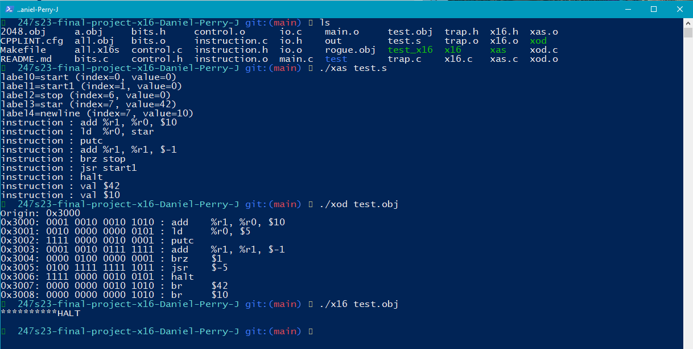
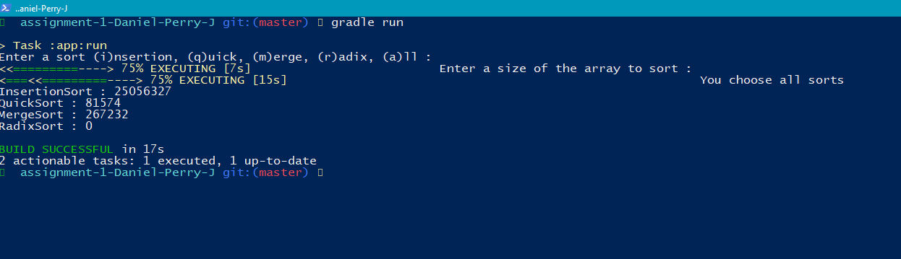

X16 - 16bit Computer
This is X16, a 16 bit computer coded in C. It can translate assembly instructions into its own binary files. It can also take these binary files to output the corresponding assembly representation. It can run any of the binary files as long as they are in its format. Each line of code is 16bits long and certain sections of each corresponds to a different instruction and value. The instructions that it can do are limited because of this.
This Algorithm-Analysis, a java program that displays the time to execute different sorting algorithms. It also displays space/memory and the number of comparisons made by each algorithm.
Algorithm-Analysis
Project 3
screenshot or imageAbout project3